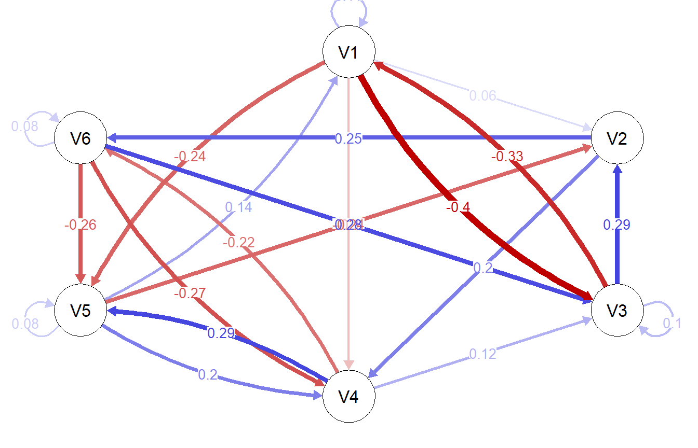
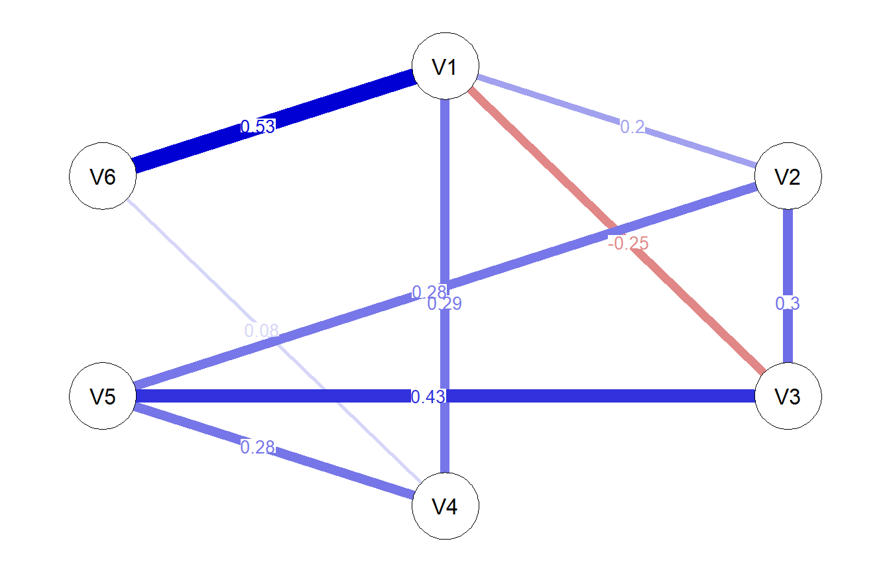
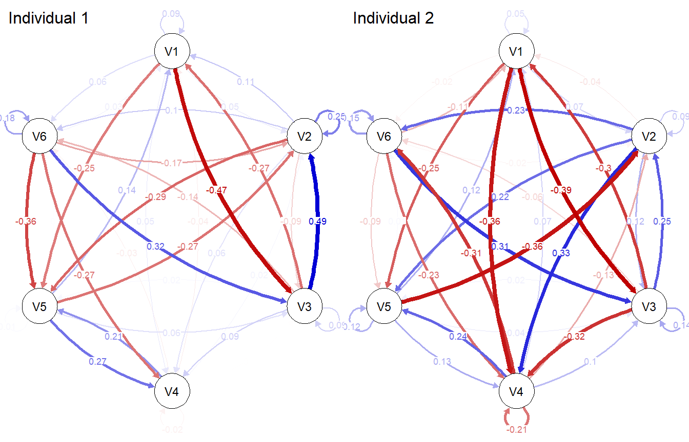
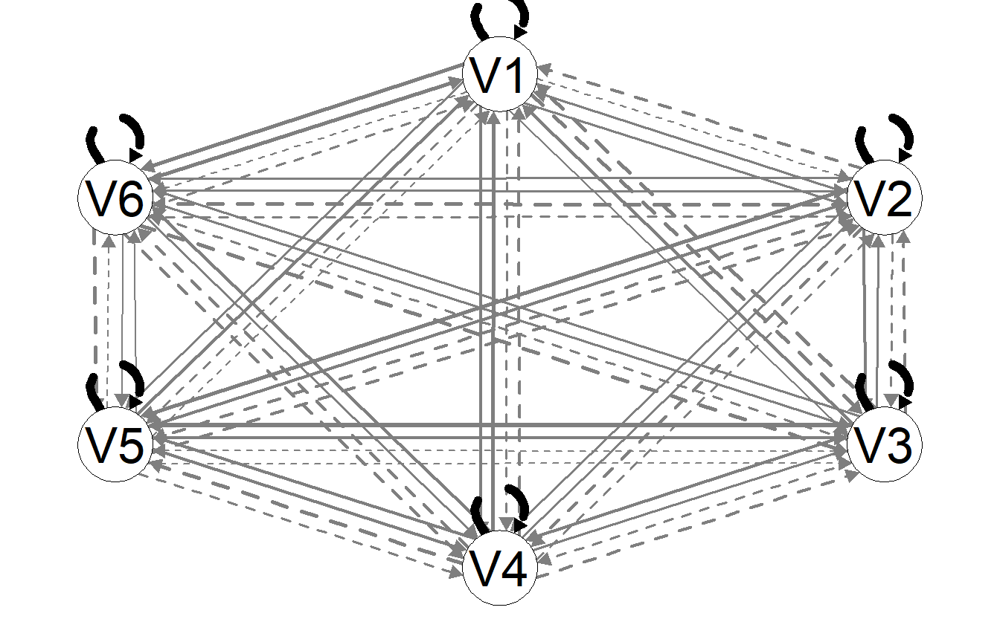

![]()
Show the code
if (!require("mlVAR")) install.packages("mlVAR")
if (!require("qgraph")) install.packages("qgraph")
library(mlVAR)
library(qgraph)
set.seed(35037)Exercise Solutions
This document contains solutions for the workshop on dynamic networks held at the Goethe University Frankfurt, Germany, on 2024-10-23. Your solutions may vary slightly when you simulated data yourself.
if (!require("mlVAR")) install.packages("mlVAR")
if (!require("qgraph")) install.packages("qgraph")
library(mlVAR)
library(qgraph)
set.seed(35037)This code shows how data were generated. You can skip this part.
n_id <- 75
n_tp <- 80
n_beep <- 4
n_days <- n_tp/n_beep
# Simulate the data
sim_obj <- mlVAR::mlVARsim(
nPerson = n_id,
nNode = 6,
nTime = n_tp,
lag = 1
)
# Load the data
df_data <- sim_obj$Data
# Add day and beep variable per person, and 4 beeps per day
df_data$beep <- rep(rep(rep(1:n_beep, each = 1), n_days), n_id)
df_data$day <- rep(rep(1:n_days, each = n_beep), n_id)
# Rename ID to id
df_data$id <- df_data$ID
# Save the data
# saveRDS(df_data, file = "Dynamic_ECR_2024/exercises/df_data.RDS")
# df_data <- readRDS("df_data.RDS")Estimate a multilevel network model using the mlVAR package.
mlVAR() to estimate a multilevel VAR model.mlvar_fit <- mlVAR::mlVAR(
data = df_data,
vars = c("V1", "V2", "V3", "V4", "V5", "V6"),
idvar = "id",
lags = 1,
dayvar = "day",
beepvar = "beep",
estimator = "lmer"
)
|
| | 0%
|
|============ | 17%
|
|======================= | 33%
|
|=================================== | 50%
|
|=============================================== | 67%
|
|========================================================== | 83%
|
|======================================================================| 100%
|
| | 0%
|
|============ | 17%
|
|======================= | 33%
|
|=================================== | 50%
|
|=============================================== | 67%
|
|========================================================== | 83%
|
|======================================================================| 100%
|
| | 0%
|
|= | 1%
|
|== | 3%
|
|=== | 4%
|
|==== | 5%
|
|===== | 7%
|
|====== | 8%
|
|======= | 9%
|
|======= | 11%
|
|======== | 12%
|
|========= | 13%
|
|========== | 15%
|
|=========== | 16%
|
|============ | 17%
|
|============= | 19%
|
|============== | 20%
|
|=============== | 21%
|
|================ | 23%
|
|================= | 24%
|
|================== | 25%
|
|=================== | 27%
|
|==================== | 28%
|
|===================== | 29%
|
|===================== | 31%
|
|====================== | 32%
|
|======================= | 33%
|
|======================== | 35%
|
|========================= | 36%
|
|========================== | 37%
|
|=========================== | 39%
|
|============================ | 40%
|
|============================= | 41%
|
|============================== | 43%
|
|=============================== | 44%
|
|================================ | 45%
|
|================================= | 47%
|
|================================== | 48%
|
|=================================== | 49%
|
|=================================== | 51%
|
|==================================== | 52%
|
|===================================== | 53%
|
|====================================== | 55%
|
|======================================= | 56%
|
|======================================== | 57%
|
|========================================= | 59%
|
|========================================== | 60%
|
|=========================================== | 61%
|
|============================================ | 63%
|
|============================================= | 64%
|
|============================================== | 65%
|
|=============================================== | 67%
|
|================================================ | 68%
|
|================================================= | 69%
|
|================================================= | 71%
|
|================================================== | 72%
|
|=================================================== | 73%
|
|==================================================== | 75%
|
|===================================================== | 76%
|
|====================================================== | 77%
|
|======================================================= | 79%
|
|======================================================== | 80%
|
|========================================================= | 81%
|
|========================================================== | 83%
|
|=========================================================== | 84%
|
|============================================================ | 85%
|
|============================================================= | 87%
|
|============================================================== | 88%
|
|=============================================================== | 89%
|
|=============================================================== | 91%
|
|================================================================ | 92%
|
|================================================================= | 93%
|
|================================================================== | 95%
|
|=================================================================== | 96%
|
|==================================================================== | 97%
|
|===================================================================== | 99%
|
|======================================================================| 100%# Plot temporal network
plot(mlvar_fit,
type = "temporal",
theme = "colorblind",
layout = "circle",
nonsig = "hide",
edge.labels = TRUE)
# Plot contemporaneous network
plot(mlvar_fit,
type = "contemporaneous",
theme = "colorblind",
layout = "circle",
nonsig = "hide",
edge.labels = TRUE)
Tip 1: Check out the mlVAR::getNet() function.
Tip 2: Use the qgraph() function to plot the networks.
# Get the individual networks
net1 <- mlVAR::getNet(mlvar_fit,
subject = 1,
type = "temporal")
net2 <- mlVAR::getNet(mlvar_fit,
subject = 2,
type = "temporal")
# Plot net1 and net2 in one plot
par(mfrow = c(1, 2))
qgraph(net1,
theme = "colorblind",
layout = "circle",
edge.labels = TRUE,
title = "Individual 1")
qgraph(net2,
theme = "colorblind",
layout = "circle",
edge.labels = TRUE,
title = "Individual 2")
# Reset the plot layout
par(mfrow = c(1, 1))Estimate a GIMME model on the data using the gimme package.
Tip 1: First get the data into a list for gimme, which requires each individual to be in a separate list element.
if(!require("gimme")) install.packages("gimme")
library(gimme)
# Get the data into a list
data_list <- split(df_data, df_data$id)
# Only select relevant columns
data_list <- lapply(data_list, function(x) x[, c("V1", "V2", "V3", "V4", "V5", "V6")])
# Estimate the GIMME model with default settings
gimme_fit <- gimme::gimmeSEM(data_list)gimme MESSAGE: No output directory specified. All output should be directed to an object.
group-level search
individual-level search, subject 1 (1)
individual-level search, subject 2 (2)
individual-level search, subject 3 (3)
individual-level search, subject 4 (4)
individual-level search, subject 5 (5)
individual-level search, subject 6 (6)
individual-level search, subject 7 (7)
individual-level search, subject 8 (8)
individual-level search, subject 9 (9)
individual-level search, subject 10 (10)
individual-level search, subject 11 (11)
individual-level search, subject 12 (12)
individual-level search, subject 13 (13)
individual-level search, subject 14 (14)
individual-level search, subject 15 (15)
individual-level search, subject 16 (16)
individual-level search, subject 17 (17)
individual-level search, subject 18 (18)
individual-level search, subject 19 (19)
individual-level search, subject 20 (20)
individual-level search, subject 21 (21)
individual-level search, subject 22 (22)
individual-level search, subject 23 (23)
individual-level search, subject 24 (24)
individual-level search, subject 25 (25)
individual-level search, subject 26 (26)
individual-level search, subject 27 (27)
individual-level search, subject 28 (28)
individual-level search, subject 29 (29)
individual-level search, subject 30 (30)
individual-level search, subject 31 (31)
individual-level search, subject 32 (32)
individual-level search, subject 33 (33)
individual-level search, subject 34 (34)
individual-level search, subject 35 (35)
individual-level search, subject 36 (36)
individual-level search, subject 37 (37)
individual-level search, subject 38 (38)
individual-level search, subject 39 (39)
individual-level search, subject 40 (40)
individual-level search, subject 41 (41)
individual-level search, subject 42 (42)
individual-level search, subject 43 (43)
individual-level search, subject 44 (44)
individual-level search, subject 45 (45)
individual-level search, subject 46 (46)
individual-level search, subject 47 (47)
individual-level search, subject 48 (48)
individual-level search, subject 49 (49)
individual-level search, subject 50 (50)
individual-level search, subject 51 (51)
individual-level search, subject 52 (52)
individual-level search, subject 53 (53)
individual-level search, subject 54 (54)
individual-level search, subject 55 (55)
individual-level search, subject 56 (56)
individual-level search, subject 57 (57)
individual-level search, subject 58 (58)
individual-level search, subject 59 (59)
individual-level search, subject 60 (60)
individual-level search, subject 61 (61)
individual-level search, subject 62 (62)
individual-level search, subject 63 (63)
individual-level search, subject 64 (64)
individual-level search, subject 65 (65)
individual-level search, subject 66 (66)
individual-level search, subject 67 (67)
individual-level search, subject 68 (68)
individual-level search, subject 69 (69)
individual-level search, subject 70 (70)
individual-level search, subject 71 (71)
individual-level search, subject 72 (72)
individual-level search, subject 73 (73)
individual-level search, subject 74 (74)
individual-level search, subject 75 (75)
gimme finished running normally# Plot the resulting model fit
plot(gimme_fit)Please specify a file id for individual plots. Otherwise, summary plot is presented.
This concludes the exercises for the Dynamic Networks Workshop.